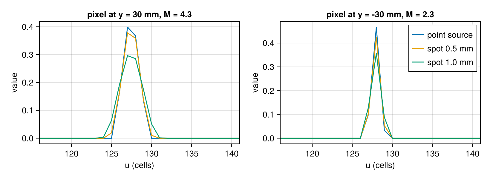
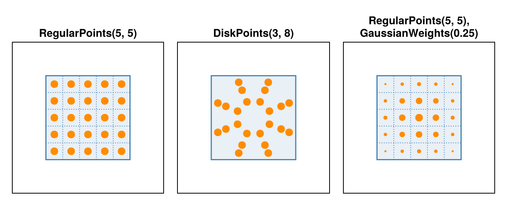
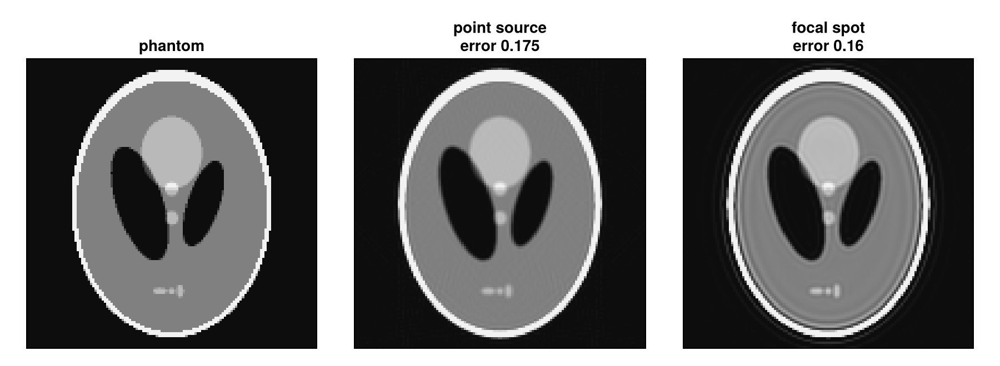
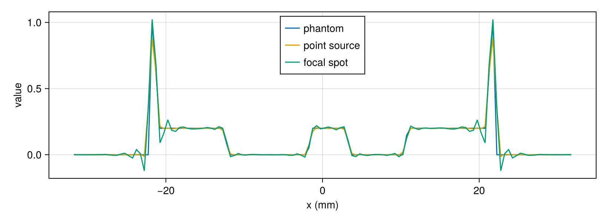
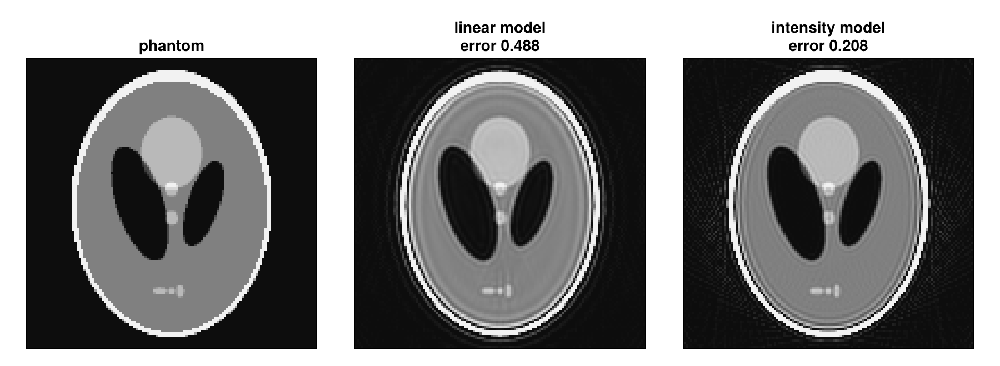

Model the Focal Spot
The X-ray source is not a point: the rays start from a focal spot of some size. This guide models it with FocalSpot and sampled: it shows the blur of a point at two magnifications, the shapes of a spot, a reconstruction with and without the spot in the model, and the model that averages intensities, IntensityModel. Sampling the Beam explains what is computed.
using CTOperators, ImagePhantoms, RegularizedLeastSquares, LinearOperatorCollection, CairoMakie, LinearAlgebra
using ImageGeoms: axisThe scan
A 2D image of 128 × 128 pixels of 0.5 mm and a fan beam with a flat detector: 360 views over one turn, the source 100 mm from the axis, the detector 300 mm from the source, 256 cells of 1 mm. A point at distance r from the source is magnified by M = 300 / r onto the detector. In an image one voxel thick in z the rays stay in the image plane, so the spot is sampled along the detector rows (u) only: it needs one row of points (RegularPoints(n, 1)); several rows and DiskPoints are rejected. Sampling the Beam shows why the spot blurs the projections.
image = ImageGeom(; dims=(128, 128), deltas=(0.5, 0.5))
geometry = circular_cone_beam(; angles=range(0, 2pi, 361)[1:360], dso=100, dsd=300, nu=256, nv=1, du=1.0)
op = JosephProjector(image, geometry);The blur of a point
One pixel, once 30 mm toward the source (M = 300/70 ≈ 4.3 in the first view, where the source is at y = 100 mm) and once 30 mm toward the detector (M = 300/130 ≈ 2.3). The detector profiles of the first view, for a point source and for spots of 0.5 and 1 mm, each sampled by 15 regular points along its width:
y_axis = collect(axis(image, 2))
pixel_at(y) = (x = zeros(Float32, 128, 128); x[64, argmin(abs.(y_axis .- y))] = 1; x)
sizes = (0.0, 0.5, 1.0)
profile(x, f) = (sampled(op; source=FocalSpot(f; points=RegularPoints(15, 1))) * x)[:, 1, 1]
profiles = Dict((y, f) => profile(pixel_at(y), f) for y in (30, -30), f in sizes);
Each source sample shifts the shadow of the pixel on the detector by -(M - 1) times its offset, so the profile with the spot is that of the point source, convolved with the positions of the samples scaled by M - 1. Variances add under convolution: the variance of the profile (in cells²) grows by that of the 15 regular points over the width f, f² (15² - 1) / (12 · 15²), times (M - 1)², divided by the cell size squared. Measured against this prediction, with M = 300 / (100 - y) for the pixel at y:
centroid_var(p) = (c = sum((1:256) .* p) / sum(p); sum(((1:256) .- c) .^ 2 .* p) / sum(p))
magnification(y) = 300 / (100 - y_axis[argmin(abs.(y_axis .- y))])
spot_var(f, y) = f^2 * (15^2 - 1) / (12 * 15^2) * (magnification(y) - 1)^2 / 1.0^2
[(y=y, f=f, measured=round(sqrt(centroid_var(profiles[(y, f)])); digits=3),
predicted=round(sqrt(centroid_var(profiles[(y, 0.0)]) + spot_var(f, y)); digits=3))
for y in (30, -30) for f in sizes]6-element Vector{@NamedTuple{y::Int64, f::Float64, measured::Float32, predicted::Float64}}:
(y = 30, f = 0.0, measured = 0.898, predicted = 0.898)
(y = 30, f = 0.5, measured = 0.99, predicted = 1.014)
(y = 30, f = 1.0, measured = 1.28, predicted = 1.301)
(y = -30, f = 0.0, measured = 0.456, predicted = 0.456)
(y = -30, f = 0.5, measured = 0.511, predicted = 0.493)
(y = -30, f = 1.0, measured = 0.61, predicted = 0.591)measured and predicted are standard deviations of the profiles in cells. The blur grows with the spot size and is larger for the pixel near the source: with the same spot, the two pixels are blurred by different amounts, the depth-dependent blur of the source (Tilley et al. 2016). Measurement and prediction differ by up to 0.024 cells: the prediction treats the profile as shifted copies of a continuous one, while the cells of 1 mm sample each shifted copy at other positions.
Shapes of the spot
The points of a spot are given in units of its size, ±1/2 at its edges, by a point strategy, and weighted by a weighting strategy, as for the detector cells (Use Several Rays per Cell): a rectangle (RegularPoints), a circle or ellipse (DiskPoints), or a profile with Gaussian weights. In the figure the blue square spans the offsets ±1/2 (for DiskPoints the spot is the inscribed disk), the dotted lines divide it into the subcells of RegularPoints, and the orange points are the samples, with the marker area relative to the largest weight. These shapes have several rows of points: they are for 3D images.

In 3D (fu × fv, with fv along the detector columns), for example a circular spot of 0.4 mm:
spot = FocalSpot(0.4; points=DiskPoints(3, 8))No projector samples a spot in its kernel, so the spot is sampled sequentially (see Sampling the Beam): sampled builds one projector per sample, on a geometry whose source is shifted, and sums them in a SampleSum of 7 projectors here. Its cost is the number of samples times that of one projection; that works for every projector:
A = sampled(op; source=FocalSpot(0.6; points=RegularPoints(7, 1)));A reconstruction with the spot in the model
The data are simulated on an image with twice the resolution, with a spot of 1.5 mm (15 samples) and 4 rays per detector cell: sampled takes both in one call. The reconstructions use Joseph's method with one ray per cell, once with a point source and once with the spot (7 samples), 30 iterations of CGNR each:
fine = ImageGeom(; dims=(256, 256), deltas=(0.25, 0.25))
shepp = shepp_logan(SheppLoganToft(); fovs=(64, 64))
x_true = Float32.(phantom(axis(image, 1), axis(image, 2), shepp, 2))
x_fine = Float32.(phantom(axis(fine, 1), axis(fine, 2), shepp, 2))
y = sampled(JosephProjector(fine, geometry); source=FocalSpot(1.5; points=RegularPoints(15, 1)),
detector=DetectorSampling(RegularPoints(4, 1))) * x_fine;
function reconstruct(A, y; iterations=30)
solver = createLinearSolver(CGNR, A; AHA=normalOperator(A), iterations)
reshape(solve!(solver, vec(y)), size(x_true))
end
spot = FocalSpot(1.5; points=RegularPoints(7, 1))
x_point = reconstruct(op, y)
x_spot = reconstruct(sampled(op; source=spot), y);
The titles give the relative error to the phantom, norm(x - x_true) / norm(x_true): 0.18 with a point source, 0.16 with the spot in the model; the window 0 to 0.4 shows the soft tissue. With the spot in the model the skull is sharper, and rings appear outside it. A profile through the middle row:

With the spot in the model the skull reaches the value of the phantom (1.0, against 0.87 with a point source), and next to it the profile over- and undershoots.
Averaging intensities
A detector cell averages intensities exp(-p_k) over its rays, not line integrals p_k. IntensityModel models that: p = -log(sum_k w_k exp(-p_k)), as the simulator of De Man et al. (1999) does for the focal spot and the detector cells. Where the rays of one data element see different line integrals, at edges, it is smaller than the mean of the p_k. The data are simulated with the intensity model on the fine image, and reconstructed with the linear model (the mean of the line integrals) and with three Gauss–Newton steps on the intensity model: in each step, the Jacobian CTOperators.jacobian at the current image, and 15 iterations of CGNR for the correction. The largest line integral of the data and the largest difference between the two models on them:
fine_spot = FocalSpot(1.5; points=RegularPoints(15, 1))
y_int = IntensityModel(JosephProjector(fine, geometry); source=fine_spot)(x_fine)
y_mean = sampled(JosephProjector(fine, geometry); source=fine_spot) * x_fine
(largest=maximum(y_int), difference=maximum(y_mean .- y_int))(largest = 16.481676f0, difference = 6.222022f0)m = IntensityModel(op; source=spot)
x_lin = reconstruct(sampled(op; source=spot), y_int)
x_gn = copy(x_lin)
for step in 1:3
J = CTOperators.jacobian(m, x_gn)
x_gn .+= reconstruct(J, y_int .- m(x_gn); iterations=15)
end
The values of the phantom, read as attenuation per mm, give line integrals up to 16.5, and the two models differ by up to 6.2 on these data. The linear model reconstructs them with a relative error of 0.48, with a double edge at the skull and rings inside; the three Gauss–Newton steps, which start from it, reach 0.21, with one edge (the titles). This is one example, with data free of noise.
Notes
- A focal spot works with every projector on
ConeBeamandArcConeBeam. Detector sampling works on every detector geometry (ParallelBeamtoo) with every projector except the distance-driven one. Both also run on a GPU (storage=CuArrayetc. when building the projector). - The intensity model builds on
stacked, one projector per sample; a detector sampling in it needs points that are the same in every cell (RegularPoints,DiskPoints,Points). IntensityGradientgives the gradient of|p(x) - y|² / 2as an operator, for solvers that take only a normal operator; its docstring lists what such a solver needs.
References
- B. De Man, J. Nuyts, P. Dupont, G. Marchal, P. Suetens, "Metal streak artifacts in X-ray computed tomography: a simulation study", IEEE Transactions on Nuclear Science 46(3), 691–696, 1999.
- S. Tilley II, J. H. Siewerdsen, J. W. Stayman, "Model-based iterative reconstruction for flat-panel cone-beam CT with focal spot blur, detector blur, and correlated noise", Physics in Medicine and Biology 61(1), 296–319, 2016.
This page was generated using Literate.jl.